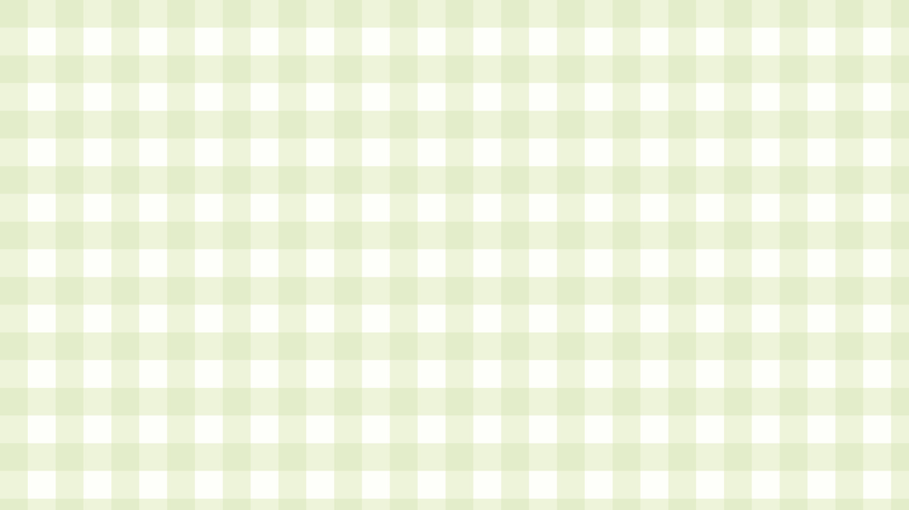
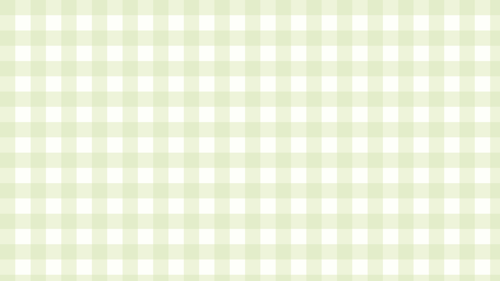

This page is a collection of my multimedia projects. This includes projects that used programs such as Illustrator and Blender, and utilized machines such as a vinyl cutter, a laser cutter, and 3D printers!



This page is a collection of my multimedia projects. This includes projects that used programs such as Illustrator and Blender, and utilized machines such as a vinyl cutter, a laser cutter, and 3D printers!



My project for my Art 284 class, Expanded Media 1, where I was assigned to use a vinyl cutter to create an art installation utilizing the environment around it. I used this faint blue rectangle on the side of a building as a base for a couch for cats to sit on. It is also near another student's installation of a mouse sleeping in a bed...I like to think that my cats and the mouse are neighbors.


Another project from Expanded Media 1, where I was assigned to make an organic form utilizing pieces of cut wood. This was done by creating paths in Adobe Illustrator to be sent to a laser cutter and assembling the pieces using wood glue.


Another project from Expanded Media 1, where I was assigned to make a functional wooden structure made to hold something. I chose to make a small display stand for my rock frogs that resembled a lily pad, with some creative liberties. This was done by creating paths on Adobe Illustrator that were sent to a laser cutter. I then stained the wood green and assembled them together using wood glue.
This was my first 3D print project for my Digital 3D class, where I utilized Blender to create and pose my model, and printed it using an Ultimaker 2. One of the options for the project was to identify an inefficiency or problem in my personal everyday life and to create a solution to this issue. Since I primarily draw using an Ipad and apple pen, I've had problems on storing the pen, as I tend to lose it a lot. I figured that making a special stand for my pen would be a creative and fun solution to my problem! I love how the finished product plays with scale, as the knight is tiny and makes the pen seem like a huge sword. And I also liked how it represented the phrase: "the pen is mightier than the sword."
The final project for the Digital 3D class. I decided to create a 3D printed mushroom decorated with little frog figures. During the design process, I decided to also make the mushroom a lamp! I wanted to create this magical and whimisical feel when it lights up! After it was printed, I spent a long time filing, sculpting clay, and painting all the pieces, it was a couple day grind. I had pulled some fairy lights through a hole in the stem of the mushroom and spread it throughout the inside of the hollow mushroom cap. The spots on the mushroom were separately printed with transparent filament, so that light can shine through. When the lamp is turned on, the light shines through the spots and parts of the cap, giving it a glow that seems magical!
Developed & Designed by Kaitlyn Montano